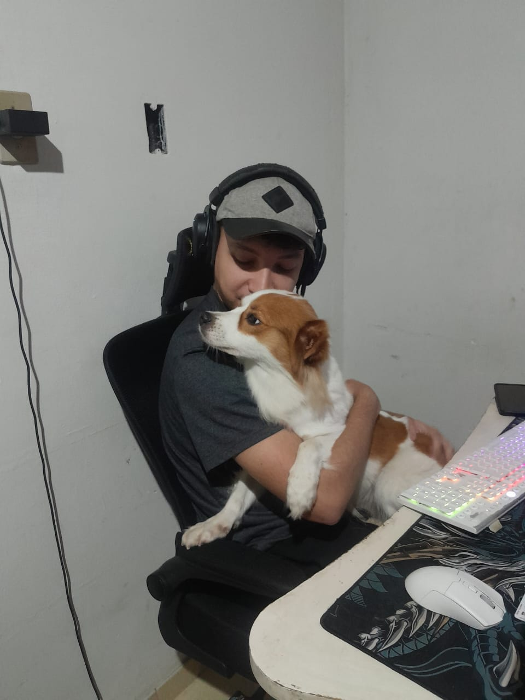
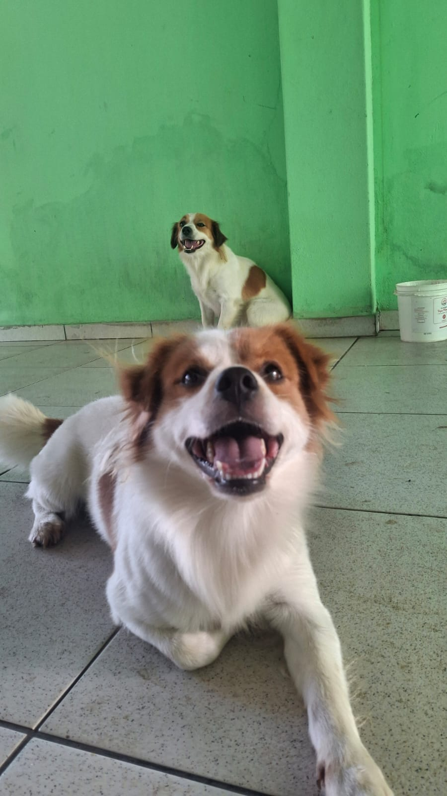
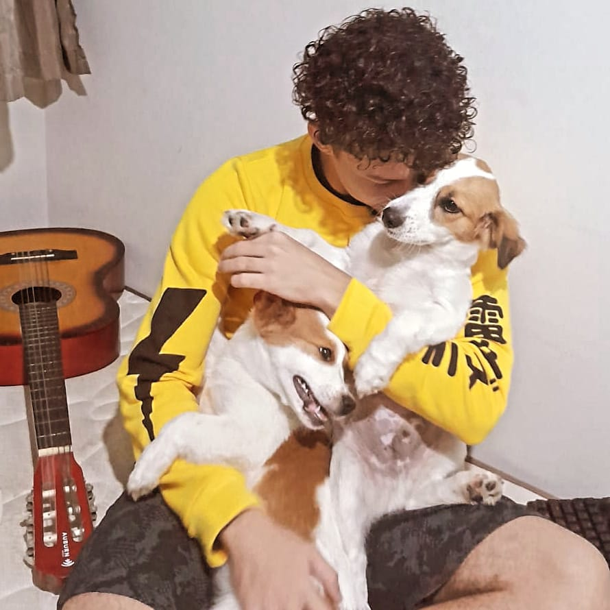
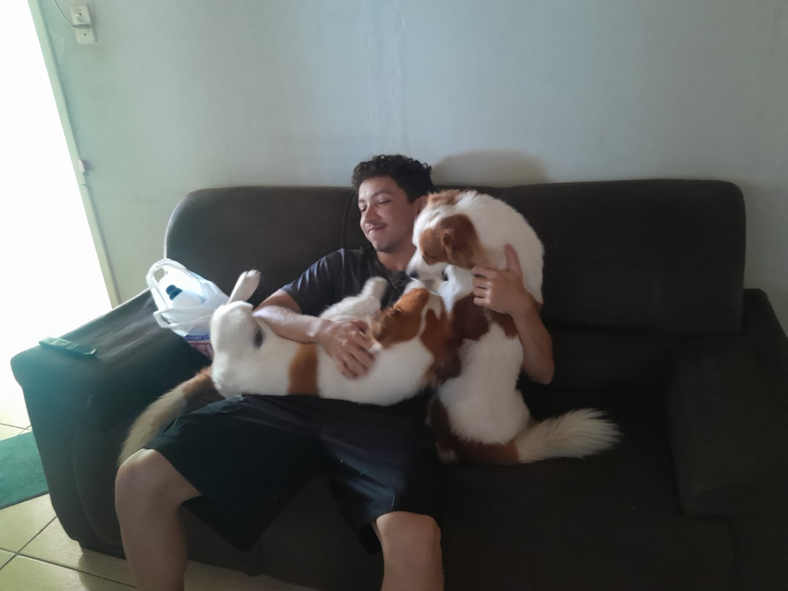
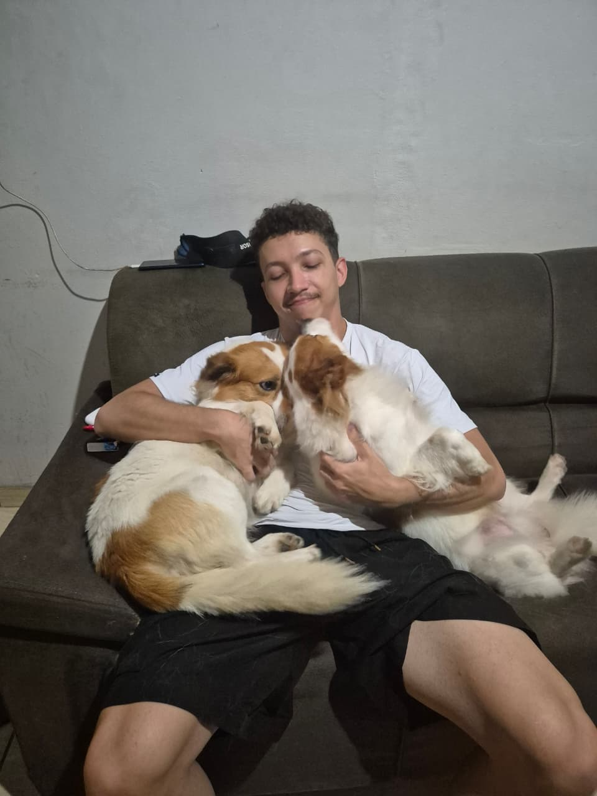
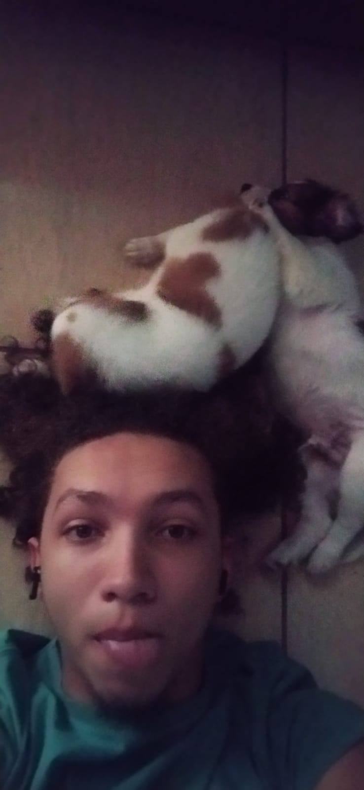
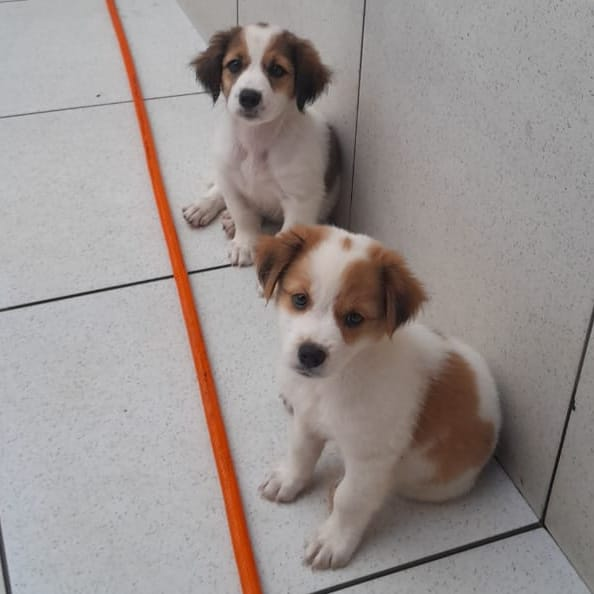

Escritor e programador nascido em Aracruz, no interior do Espírito Santo;
Suas primeiras histórias foram escritas e publicadas em Outubro de 2018,
ainda sem nenhum conhecimento sobre literatura;
Hoje conta com um acervo de poemas publicados e 3 histórias em processo
de escrita, com uma, inclusive, sendo postada a cada novo capítulo, como
pode conferir em O Exorcismo.

Eles têm 2 anos, nascidos em 02/02/2024 e são irmão, apesar de não parecer;
Suas principais atividades se resumem em latir, pular nos outros, cavar e fugir de casa;
São vascaínos e sempre assistem o jogo com o dono, mesmo que seja só pra dormir no sofá;
Geralmente existem cerca de 15 fotos deles para cada 1 minha no meu celular e no dos outros.





